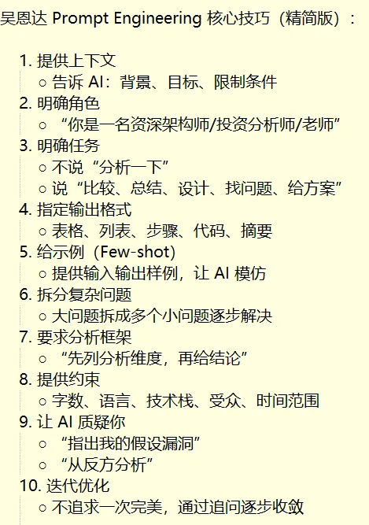

引言
和 AI 一起干活有段时间了，有些想法不吐不快。
笔者作为一名互联网后台研发，日常的编码、调试、评审都大量用 AI，收益见过，坑也踩过。
下面这 12 条谈不上体系，纯粹是一线用下来的个人思考，分享给大家。
一家之言，欢迎交流。
01
做任何事情前，先考虑到是不是能借助 AI 来完成。
这点最容易，也最难。
说它易，因为它本身就是一个念头，先 AI 一把，一句话的事 ~
说它难，因为它有点像是习惯之类的东西，而习惯是很难改的，不信任 AI 的人心底会自发抵触。
这类人容易停在失败样本上，而多数失败样本换个模型或补足上下文就能绕过。
所以说信不信，是个大问题。
也因此，很多问题的答案，这么近（AI 就可以搞定），又那么远（不知道去用 AI 解决）。
02
AI 现在的水平，在相当一部分任务中，说它能在数字世界里“横着走”不为过。
组织在人员梯队盘点的时候，会发现能力和意愿的相对重要性开始有反转的趋势。
意愿的重要性将被大幅放大。
假如原来有一个同学，意愿很强，受限于能力不足难以施展，现在加上 AI 可能就有不错的产出。
又假如原来有一个同学，专业很强，觉得老子天下第一，很多信息仅藏在我的脑子里（信息垄断），不主动争取，等着分配“好活”，他的不可替代性将会被削弱。
03
有了 AI 之后，外行 + AI 有时可以指导内行。
我们外网有个 k8s 集群要迁移，直接将 Istio 相关负责同学提供的方案和外网部署情况上下文交给 AI，它准确地指出了方案本身的可行性存在问题。
在团队内部其实也类似，外行的新员工 + AI，很可能超过内行的老员工。
因此 AI 时代下，大家需要提升意愿，突破边界，多管闲事，争取贡献更大的个人价值。
04
按目前笔者的个人经验，AI 在全局一致性和可维护性方面不尽如人意，且有时候会有幻觉。
所以人类的判断还是不可或缺的，判断力不好可能被 AI 忽悠。
如果无脑信 AI，不做审核判断地堆积很多 AI 写的代码和文档，后面大概率就是系统中充斥了大量的 AI slop，然后失控腐化。
那判断力和审美品味怎么培养呢？
只能多学习、多实践、多反思，尤其是 AI 不能轻易获得数据的那些实践经历尤为宝贵。
人类的提升方法论和 AI 本质上是趋同的 —— 大量做决策，根据后果反馈持续修正。
05
一头，从问题开始：你得有问题，并能和 AI 交代清楚到底要做什么，这是一个耗时环节。
讲清楚自己想要什么，并不是一件简单的事情，想要的东西越复杂，就要越多时间和 AI 交代清楚。
一尾，以验收结束：虽然指挥 AI 时你可能提了诸多约束，但最后还是要通过各种测试、检查甚至人工 review 来验收，这也是个耗时环节。
就像纳德拉说的认知覆盖率（Cognitive Coverage），你是否能理解 AI 交付的一堆产出物。
如果你要人工 review，那显然就又是一个短板。
现实中具体问题具体分析，例如做个浏览器插件就不看代码了，而改核心业务代码，还是得细看。
06
在模型能力越来越强的背景下，prompt 依旧还是很重要。
AI 就是一个庞大的知识体系，你用不同的关键词，查找得到的内容是不一样的。
prompt 就是那个关键词，你和 AI 沟通的具体内容，会影响它内部哪些参数被激活。
那和 AI 怎么聊比较好呢？
你可以直接让 AI 给你总结（这也是一种 AI First），让它直接给出吴恩达提示词工程课程的核心观点。

上下文有没有给够，引导的方向对不对，这些都很影响输出。
有时候不能引导，有时候又需要引导，乱引导是瞎指挥，正确的引导事半功倍。
不需要一开始就很完备地提供上下文，也不需要固定和 N 个大模型去聊，只是需要格外关注这种坏味道：AI 搞不定，或者 AI 给的解决方案成本较高。
这时候，再去做沟通上的冗余：换不同模型问，同一个模型换不同的 prompt 和上下文去问。
07
要尽量从提效情况量化反推，不要自我感动，弄一堆 AI 的东西自嗨。
基于目标导向做推导，借助 AI 来做是否真的合适，以及为了解决相关问题，是否有其他更经济的途径。
对于同样输入一定得到同样输出的确定性问题，实际上应该用工具来解决，而不是每次跑大模型推理。
工具本身可以考虑用 AI 来开发，但是一旦开发好之后，就持续使用工具即可（桩代码生成、格式检查，都是这类例子）。
08
老员工脑子里的知识库，降低了他们对外部知识库的要求，可以快速准确地从脑子里召回相关知识。
老员工（一年经验重复十年的不算）的领域内判断力也占优势。
在知识库健全的团队，并且团队从事的是有大量公开数据可供 AI 学习的领域，老员工的优势就不明显了。
另外需要指出的是，由于 AI 的助力，新员工的追赶速度加快了，原来存在信息孤岛的模块，AI 可以很快总结得八九不离十。
因为打杂性质事务的减少，初级员工的招聘会变少，但对于在岗的员工而言，用好 AI，提升意愿，新员工能得以快速进步，老员工拥有的那点信息壁垒也会很快被瓦解。如毛爷爷所说，世界归根结底。。。还是年轻人的。
09
个人提效显然毋庸置疑，但凡用过 AI 的人对这点不会有任何质疑。
团队提效则面临协同、度量问题，涉及多角色的协调推进，有可能开发不是短板，其他环节却卡住了。用缺陷情况、需求交付吞吐之类的指标去度量，也略显奇怪，因为不同需求的差异性也很大。不过再麻烦，还是要有团队负责人推动去审视，从整体来看产品或服务的生产管线，做 AI 原生的思考，看组织架构合理性、看各角色分工协作情况。
业务提效更强调效果而非效率，要看收入和用户规模的变化，同时也要看是否好细分量化归因到 AI 上去。
总之一句话：个人提效无争议，团队提效难度量，业务提效难之又难。
10
产能过剩，这个词恐怕大家都听得耳朵起茧了。
真正有价值的问题没那么多，AI 会带来同质化内容的产能提升，然而市场就那么大，回报就那么多。
最有价值的场景，还是通过 AI 做一些新东西，创造新需求。
搞存量内卷，那无非就是你死我活的竞争，世界没有变得更好。
你产出变多了，工作时间没变，业务也没有多赚钱，企业发现难以增效，最终可能走上降本裁员的路子。
11
能沉淀下来给团队做复用的，还是文档、skill、MCP、rule、功能性 agent 之类的东西，这些都是自然而然可以积累的。
对于普通业务团队而言，AI 并不是底座，它基于信息和工具来做干活，你并不需要先弄一个 AI 大架子。
正因为它不是底座，未形成依赖捆绑，有人执着于先做 harness 架子，笔者原则上也不反对，因为这并不影响他人和系统。
本质上这是一种蒸馏，若要是真的想推广给团队用，最好由团队最优秀的同学蒸馏下他的工作经验，再叠加团队积累的一些经验，作为 harness 工程的 1.0 版本去做 LLMOps 迭代。
实际上，团队层面积累的知识和 skill，基本都是从具体场景引出，是 bottom-up 的。
研发管线需要的一些基础知识和 skill，其实也就是原来的新人手册，这部分很快就可以收敛。
业务体系需要的知识和 skill，随着业务需求的开展，查漏补缺按需维护即可。
功能性的一些 agent 机器人，也从问题出发来补齐，例如 CodeReviewer、TapdBugFixer 等。
当然你可能做了这些事情后，回头总括起个名，也可以叫做 harness。
更基础的和 AI 沟通的架子，都被 Claude Code / Cursor 之类的工具内化了，直接用就行。
12
知识的存储和召回，这个本质上是和业务关联性不大的通用技术，应该直接用现成的服务或组件，如果真的想自己来搭建，那也是基于开源的一些解决方案，然后核心点是“用”好。自己深度调整各种参数在这里的问题是，参数比较多，小团队可供对比调优的场景数据也比较少，难以构建数据飞轮。
知识本身的补齐和更正，才是需要花更大精力的事情，也比较依赖人的把关。
我们可以借助大模型来回顾发现一些问题，但以目前的 AI 水平，很难放心让它自助维护知识库。
想象下：你能接受 AI 自己编知识补全，或者它按自己理解将知识改对么 …
显然还是需要考虑护栏，做人工审核。此外随着业务的运营，会持续产生大量的新知识，所以知识本身的维护必然是持续性的。
结语：能力会被补齐，意愿不会
AI 变强之后，人还剩下什么？
剩下的是问对问题的能力、不被忽悠的判断力，以及主动越界的意愿。
亢奋的人把 AI 当底座，非要搭个大架子才称之为专业的 AI Coding；悲观的人盯着 AI 的失败样本，拿“它还不行”当“我不用变”的借口。
真正产生价值的是：你拿 AI 卷存量，还是做原来做不了的新东西。
明天就开始养成一个习惯：默认先问一次 AI，并且把一次“搞不定”当信号而不是结论——换模型、补上下文、再试一轮。
这是最好的时代，也是最坏的时代。
终局也许是无人化，但在那天到来之前，它属于那些愿意越过边界、把事情做得更好的人。
感谢你读到这里，不如关注一下？👇